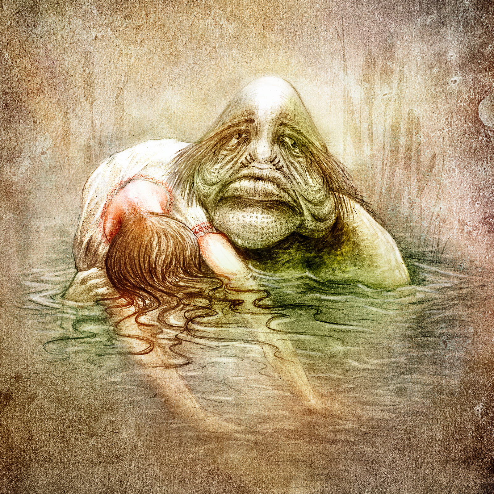

Хозяин водоема
О нем рассказывают скорее с хитроватым озорством, чем со страхом. Вечный холостяк, он очень любит женщин, караулит их, чтобы предстать во всей своей «красе», напускает на женщину свои чары – и та послушно следует за ним. Но Баламутень никогда не забирает женщин навсегда. После встречи с этим болотным Казановой они приобретают способность не тонуть.
Характер у него – под стать его внешности: довольно поганый. Одним из его любимых развлечений было запутывание сетей у рыбаков. Еще он любил хватать купающихся людей за ноги – притопит и отпустит. Или переворачивать лодки. В общем, пакостил, как мог.
Но с ним можно было найти общий язык – через жертву или услугу. Мельники бросали под водяные колеса куски сала, рыбаки (а водяник – властитель всех рыб) заключали с ним договор, как с чертом. А если водоем пересыхал, то водяник превращался в лепешку ила, и его переносили в другой водоем. Тогда водяник гнал в сети рыбаку улов, а также, в виде особой благодарности, мог показать спасителю водный мир изнутри, на время поместив человека в большой водяной пузырь на дне водоема.